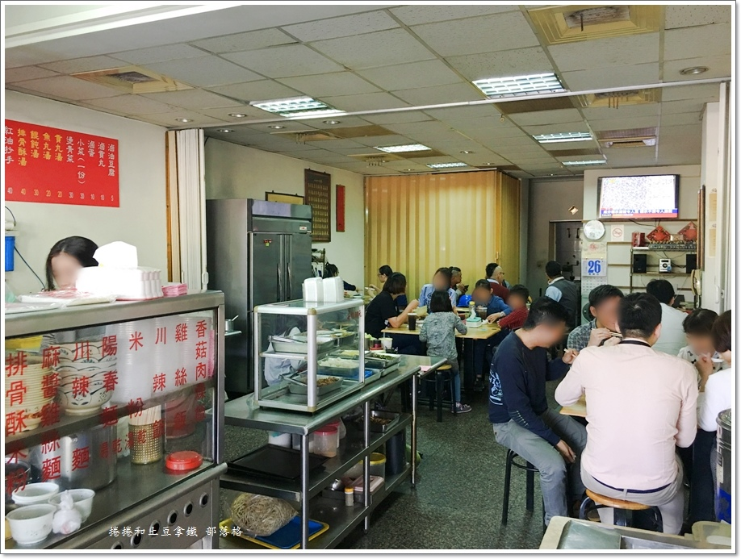
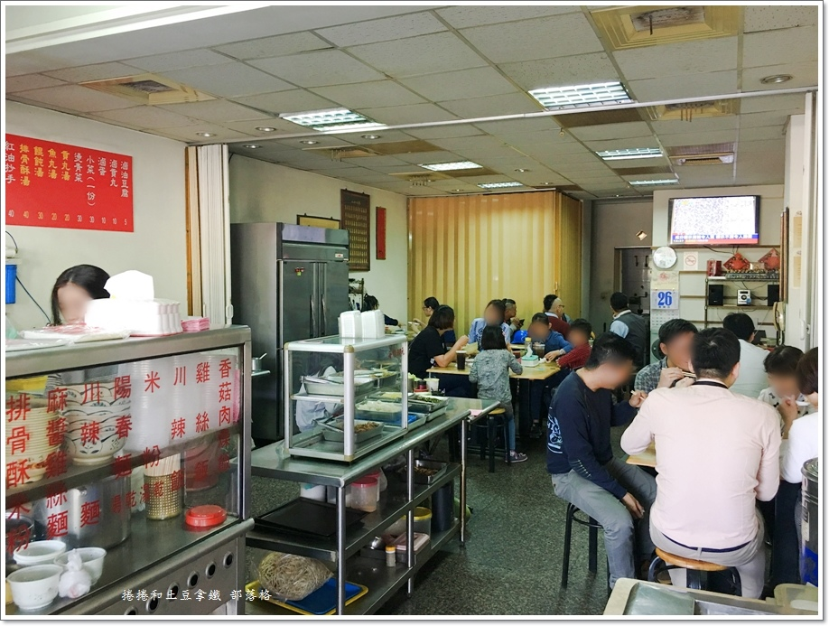
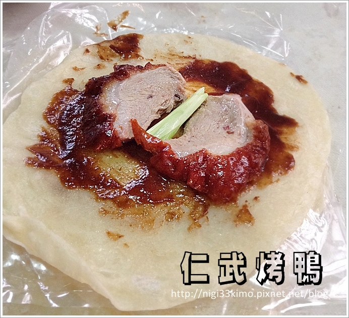
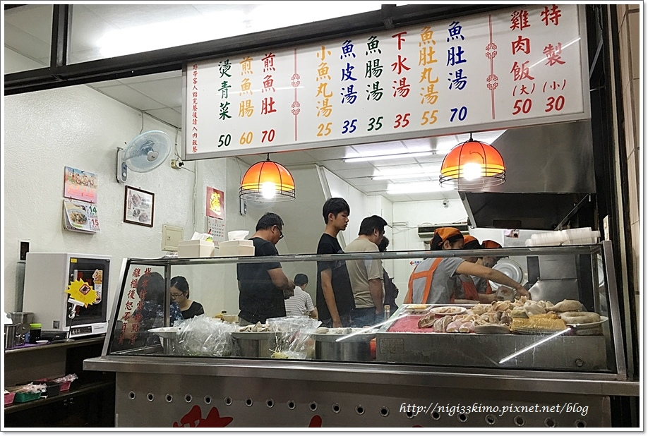
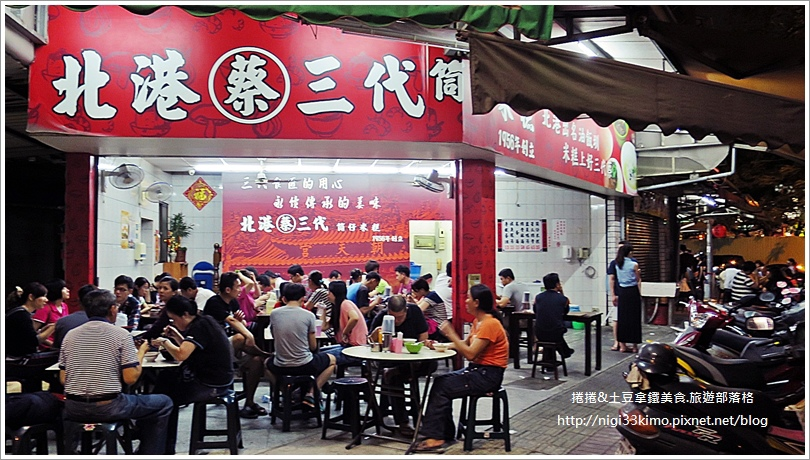
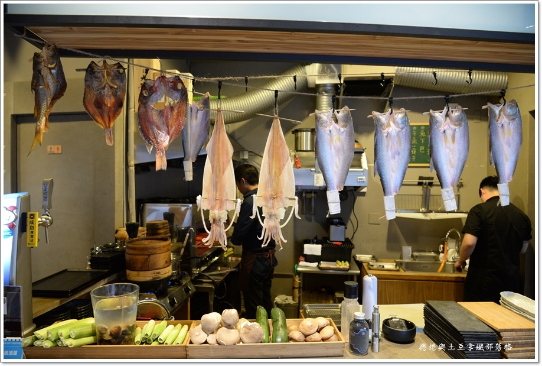

陳師父川辣麵
「陳師父川辣麵」隱藏在舊眷村改建的社區大樓裡， 這裡供應的料理，雖不是正統川菜，但結合老闆記憶 熟悉的家鄉味及台式味道，研發出全新口感的川辣麵 ，微辣口味很深受大家喜愛。其他麵飯也都有老闆自 己的味道，與其他店有不同的口味。
「陳師父川辣麵」隱藏在舊眷村改建的社區大樓裡， 這裡供應的料理，雖不是正統川菜，但結合老闆記憶 熟悉的家鄉味及台式味道，研發出全新口感的川辣麵 ，微辣口味很深受大家喜愛。其他麵飯也都有老闆自 己的味道，與其他店有不同的口味。
迫不及待將餅皮包挾片好的帶皮鴨肉、青蔥和甜麵醬，捲起入口。 咬下Q彈的餅皮，裡頭的烤鴨皮脆肉嫩，加上青蔥提味，溢滿香氣。 那荷葉餅真的是我吃過最好吃的，多買一份餅皮都嫌不夠。 而帶皮鴨肉用來捲餅，而剩下的骨頭剁一剁後， 搭配九層塔、蔥、蒜、辣椒等快炒， 就成了滋味鹹甜的醬香鴨骨，可以享受啃骨的樂趣，也很很好的下酒菜。
小林雞肉飯，開業應該超過30年以上了， 就位在巷口的三角窗位置，地理位置算是非常醒目， 在這一區~大統百貨和平店商圈附近，頗受附近居民及上班族的喜愛， 因為簡單方便、經濟實惠又能吃得美味。 用餐時間人潮總是不斷，讓工作人員忙得幾乎沒什時間招呼客人， 但是服務人員的態度都仍都是非常客氣有禮， 不像有些老店，生意一好，就愛理不理的，吃得心裡就真有點倒彈。 台灣小吃除了美味以外，還因為多了一份人情味及親切感， 所以才能更受到大家或是其他觀光客的喜愛。 這裡賣的料理種類很單純，主要以雞肉飯為主， 還有湯品共約六種，另外就燙青菜、煎魚肚、煎魚腸及黑白切。 價位都很合理。
知道這家老店，其實很久了，但是卻一直沒進來用過餐， 實在是鹽埕區的傳統小吃太多家了，選擇性太多！ 這天開車來，車子正好停在河西路上，不如就近 進來嚐嚐。 周日晚上，唉呦微啊，人怎麼這麼多！ 連隔壁也是他的店面，不管是室內或戶外的，都是坐得滿滿的人潮。
開幕一年多的【黑平 居酒屋】， 位在巨蛋商圈附近，離捷運「生態園區站」不遠。 有幾次白天路過時，從外觀看來和一般餐廳別無二致， 沒想到當傍晚開始營業後，看著裡頭透出的燈火， 凸顯著這間餐廳質樸又不失個性的風格特色。 彷彿在向我示意：「歡迎光臨！請進來小歇一會吧！」。
所謂的「黑平」，簡單講是從日文漢字直接引用， 是指生意非常好，炭烤的煙把餐廳內的天花板都給燻黑了。 這裡的環境不大但溫馨，在下班後和朋友一起來喝點小酒， 可以很放鬆也隱密，就算是幾個女生一起歡聚也很能盡興。
